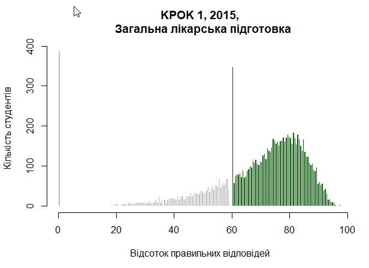
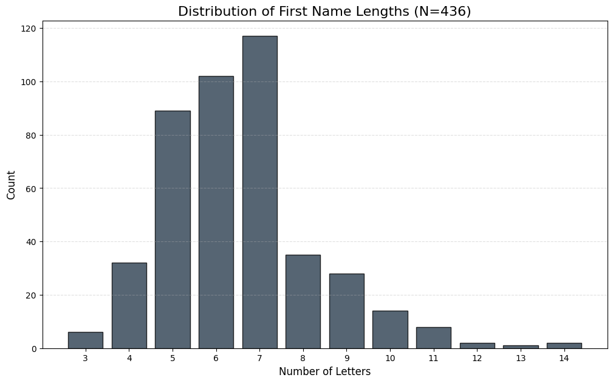

viewof mu = Inputs.range([-5, 5], {value: 0, step: 0.1, label: "Mean (μ)"})
viewof sigma = Inputs.range([0.1, 5], {value: 1, step: 0.1, label: "Std Dev (σ)"})
// 2. Draw the graph
Plot.plot({
grid: true,
y: {domain: [0, 0.5]},
marks: [
Plot.line(d3.range(-4, 4, 0.1).map(x => [x, (1/(sigma * Math.sqrt(2 * Math.PI))) * Math.exp(-0.5 * Math.pow((x - mu)/sigma, 2))]), {stroke: "steelblue", strokeWidth: 3})
]
})Distribution of Sample Mean
ImportantMain question
what and how can we learn abouth the population mean (\(\mu\)) from a simple random sample?
Example:
If we have a sample of size \(n=20\) of heights of students, naturally we can compute sample mean \(\bar{x}\). How is it related to the population mean \(\mu\)?
- Clearly they dont have to be equal.
- Every new sample may result in a different value of \(\bar{x}\).
- Given that \(\bar{x}\) is random, how close it tends to be to the true mean?
Key observation:
We need to understand properties of \(\bar{x}\) as a random variable, i.e. understand its probability distribution. Of course, it depends on:
- the distribution of underlying population (unknown!!)
- the sample size \(n\)
Lets explore the properties of \(\bar{x}\) assuming for now that we know what is the distribution of population.
Simple Example: Uniform distribution of population
Suppose the population generated by a a throw of a die, i.e the is pmf is:
\[\begin{equation} P(X_i = x) = \begin{cases} \frac{1}{6} & \text{if } x \in \{1, 2, 3, 4, 5, 6\} \\ 0 & \text{otherwise} \end{cases} \end{equation}\]
Note:
Recall that we treat population as a probability distribution from where we draw the sample. So, our sample \(X_1,\dots, X_n\) consists of iid random variables distributed as above.
If we were to draw a histogram of values in population it will look like a theoretical pmf: %20copy.png) We shall derive distribution of \(\bar{x}=\frac{\sum X_i}{n}\) for couple of values of \(n\).
We shall derive distribution of \(\bar{x}=\frac{\sum X_i}{n}\) for couple of values of \(n\).
\(n=1\)
One observation has the same distribution as population: \(X_1\sim DUnif\).
\(n=2\)
Support of the Sample Mean for \(n=2\) independent die rolls is the set of all possible values the average \(\bar{X} = \frac{X_1 + X_2}{2}\) can take. The support is:\[\text{Supp}(\bar{X}) = \{1, 1.5, 2, 2.5, 3, 3.5, 4, 4.5, 5, 5.5, 6\}.\]
Lets derive some of the probabilities.
To find \(P(\bar{X} = 1)\): The sum must be \(2\bar{x} = 2\). The only outcome \(\{(1,1)\}\). Hence:
\(P(\bar{X} = 1) = \frac{1}{36}\)
To find \(P(\bar{X} = 3)\): The sum must be \(2\bar{x} = 6\). Favorable outcomes: \(\{(1,5), (2,4), (3,3), (4,2), (5,1)\}\). Hence:
\(P(\bar{X} = 3) = \frac{5}{36}\)
Generally we get the following pmf:
%20copy.png)
n=3
Similar computations result in the pmf: %20copy%202.png)
n=4
Interesting:
- For each n distribution is different! Supports different, probabilites different.
- But the pattern that arisses! Concentrates around the mean, tails die down.
- Shape stabilizes!
Abobe are theoretically derived pmfs. For large n these are hard to derive. But we can simulate. Below we used Python (and Gemini!) to simulate taking 1000 samples of size n=20 and n=200. For each of the samples we compute \(\bar{x}\) and here is the histograms of its values:
%20copy%202.png)
%20copy%203.png)
Main observations:
- All distributions are symmetric and centered around population mean \(\mu=3.5\)
- The variance seams decreasing in a sample size \(n\): the higher \(n\) the more closer \(\bar{x}\) tend to be to the population mean \(\mu=3.5\)
- Distributions tend to be bell-shaped for higher sample sizes \(n\)
Theoretical proof for (1) and (2)
\(E(\bar{x})=E(\frac{\sum X_i}{n})=\frac{1}{n}\sum E(X_i)=\frac{n\mu}{n}=\mu\)=Population mean
\(Var(\bar{x})=Var(\frac{\sum X_i}{n})=\frac{Var(X_i)}{n}\)=Population variance divided by \(n\)=\(\sigma^2/n\)
The above derivations work for any distribution of population!
ImportantProperties of Sample Mean
For any population and sample size \(n\) we have \(E(\bar{x})=\mu\) and \(Var(\bar{x})=\sigma^2/n\)
The third observation is in fact also independent of the specific example and is one of the main results in the whole of probability theory - Central Limit Theorem.
ImportantCentral Limit Theorem
Let \(X_1, X_2, \dots, X_n\) be a sequence of independent and identically distributed (iid) random variables with a finite mean \(E[X_i] = \mu\) and a finite variance \(Var(X_i) = \sigma^2\). As the sample size \(n\) approaches infinity (\(n \to \infty\)), the distribution of the sample mean \(\bar{X}_n\) converges to a Normal distribution:
\[\bar{X}_n \xrightarrow{d} N\left(\mu, \frac{\sigma^2}{n}\right)\]
Normal distribution is a continuous probability distribution with two parameters, mean and variance (or standard deviation). Lets see how its pdf looks like!
Coming back to our example with 1000 simulations of sample mean for n=200 we can see that it is indeed very close to theoretical normal pdf.!
%20copy%204.png)
So summurize our main result so far which will be a foundation of the entire statistical analysis:
Tip
No matter the distribution of population the shape of the distribution of sample mean for large sample size \(n\) is Normal.
Normal distribution
The Standard Normal Distribution
The Standard Normal is a special case of the Normal distribution where the variable is already centered and scaled, denoted as \(Z \sim N(0, 1)\).
1. The Probability Density Function (PDF)
The PDF of the standard normal distribution defines the classic “bell curve” shape with a mean of 0 and a standard deviation of 1. It is denoted by the lowercase Greek letter \(\phi\):
\[\phi(z) = \frac{1}{\sqrt{2\pi}} e^{-\frac{1}{2}z^2}\]
2. The Cumulative Distribution Function (CDF)
The integral of the Normal PDF does not have a “closed-form” algebraic solution (meaning it cannot be written using basic operations or polynomials). We represent the area under the curve using the uppercase Greek letter \(\Phi\) (Phi):
\[\Phi(z) = P(Z \le z) = \int_{-\infty}^{z} \frac{1}{\sqrt{2\pi}} e^{-\frac{1}{2}t^2} dt\]
In practice, these values are obtained using statistical tables, Excel, or Python (scipy.stats.norm.cdf).
3. Core Properties
- Mean and Variance: By construction, the mean is 0 and the variance (and standard deviation) is 1.
- Symmetry: The distribution is perfectly symmetric around \(z=0\). This leads to two useful rules:
- \(\Phi(0) = 0.5\) (exactly half the area lies on either side of the center).
- \(\Phi(-z) = 1 - \Phi(z)\) (the area to the left of a negative value equals the area to the right of its positive counterpart).
- Total Area: Like all valid probability distributions, the total area under the curve is exactly 1. The constant \(\frac{1}{\sqrt{2\pi}}\) exists specifically to ensure this unit area.
The General Normal Distribution
While the Standard Normal is a useful baseline, most real-world data follows a General Normal Distribution, denoted as \(X \sim N(\mu, \sigma^2)\).
1. Location-Scale Transformation
We can transform any Standard Normal variable \(Z\) into a General Normal variable \(X\) using a simple linear equation:
\[X = \mu + \sigma Z\]
- Location (\(\mu\)): Shifts the center of the bell curve.
- Scale (\(\sigma\)): Stretches or shrinks the spread of the curve.
To go the other direction (from data to a z-score), we use Standardization:
\[Z = \frac{X - \mu}{\sigma}\]
2. The Probability Density Function (PDF)
The general formula for the normal curve is:
\[f(x) = \frac{1}{\sigma\sqrt{2\pi}} e^{-\frac{1}{2}\left(\frac{x-\mu}{\sigma}\right)^2}\]
3. Key Properties
- Symmetry: The distribution is symmetric around the mean \(\mu\). In a normal distribution, the mean = median = mode.
- Parameters: * The first parameter \(\mu\) is the expected value (\(E[X]\)).
- The second parameter \(\sigma^2\) is the variance (\(Var(X)\)).
- The 68-95-99.7 Rule:
- ~68% of observations fall within \(\pm 1\sigma\) of the mean.
- ~95% of observations fall within \(\pm 2\sigma\) of the mean.
- ~99.7% of observations fall within \(\pm 3\sigma\) of the mean.
Tip
If we need probabilities for general Normal, we can simply express them using a standard Normal: \[P(X<x)=P(\mu+\sigma Z<x)=P(Z<\frac{x-\mu}{\sigma})=\Phi(\frac{x-\mu}{\sigma})\]
Normal in Real Life
This is the histogram of proportion of heads in simulation of 1,000 coin tosses repeated 10,000 times. %20copy%205.png)
In 1885 Francis Galton collected a dataset which is one of the most famous examples in the history of statistics. It demonstrates that human height follows a Normal distribution, providing a biological illustration of the Central Limit Theorem (where height is the result of many small, independent genetic and environmental factors added together).
Below is Height Distribution of ECON211 Female Students (\(n=185\)). Mean (\(\mu\)): \(165.9\) cm; Standard Deviation (\(\sigma\)): \(5.7\) cm.
%20copy%206.png)
%20copy%207.png)
Some exams,like SAT, are specifically designed to have the Normal distribution of scores, so SAT scores are exactly normal. Below is the distribution for 2023 with 1.9 million test-takers. For example, a student with a score of 1550 will be higher than 0.9935 fraction of test takers. That is a score of 1550 is in the 99.35th percentile. In a room of 1,000 students, only about 6 or 7 would be expected to have a higher score.
%20copy%208.png)
Here is the screenshot from Garmin app with distribution of sleeping times for the users.

And the distribution of steps per day. Notice the right skew (positive skew) in the distribution of daily steps. Unlike height or SAT scores, this data is not exactly Normal; the right tail is “heavier,” extending much further from the mean than the left tail.

Ukrainian medical students are passing KROK test since 1999. Here are some fishy-looking results from 2015. Can you guess the issue?

Below is the histogram of first names lengths of students in this class for a couple of years. Again, notice the scew.


Using Normal distribution to find approximate probabilities
Example: Approximating Coin Toss Proportions
In this problem, we compare the exact probability using the Binomial distribution with the approximation provided by the Central Limit Theorem.
The Setup
- Trial: Flip a fair coin \(n = 1000\) times.
- Random Variable: Let \(X_i = 1\) if Heads, \(0\) if Tails. \(X_i \sim \text{Bernoulli}(p=0.5)\).
- Sample Mean: The proportion of heads is \(\hat{p} = \frac{1}{n}\sum X_i\).
Goal: Find the probability that the proportion of heads is less than \(0.45\).
1. Exact Solution: Binomial Distribution
The number of heads \(k\) follows a Binomial distribution \(B(1000, 0.5)\). A proportion of \(\hat{p} < 0.45\) corresponds to \(k < 450\) heads (i.e., \(k \le 449\)).
\[P(K \le 449) = \sum_{k=0}^{449} \binom{1000}{k} (0.5)^k (0.5)^{1000-k}\]
Exact Probability \(\approx 0.000635\)
2. Normal Approximation
The Central Limit Theorem applies here because the proportion of heads is the sum (and average) of \(n=1000\) iid Bernoulli variables. Even though a single coin toss is not Normal, their average is.
Step A: Define Parameters
- Mean: \(\mu_{\hat{p}} = p = 0.5\)
- Variance: \(\sigma^2_{\hat{p}} = \frac{p(1-p)}{n} = \frac{0.5(0.5)}{1000} = 0.00025\)
- Standard Error: \(SE = \sqrt{0.00025} \approx 0.0158\)
Step B: Calculate Z-score We transform our target proportion (\(0.45\)) into a Standard Normal \(Z\)-score:
\[Z = \frac{0.45 - 0.5}{0.0158} = \frac{-0.05}{0.0158} \approx -3.16\]
Step C: Find Probability Using the symmetry of the Normal curve: \[P(\hat{p} < 0.45) \approx \Phi(-3.16) = 1 - \Phi(3.16)\]
Approximate Probability \(\approx 0.000789\)
Comparison Summary
| Method | Probability | Context |
|---|---|---|
| Binomial (Exact) | \(0.000635\) | Mathematically precise but requires high computing power for large sums. |
| Normal (CLT) | \(0.000789\) | Highly accurate for \(n=1000\) and easy to solve with a Z-table. |
Tip
If a random variable can be expressed as the sum (or average) of a large number of independent and identically distributed (i.i.d.) variables, the Central Limit Theorem (CLT) allows us to approximate its distribution using the Normal distribution, regardless of the underlying distribution of the individual variables.”
Note
The Normal distribution is continuous, so \(P(\hat{p} = a) = 0\). To approximate an exact discrete value, we apply a continuity correction by adding and subtracting \(0.5\) to the success count \(k\). This creates a small interval around the proportion: \[P\left( \frac{k - 0.5}{n} \leq \hat{p} \leq \frac{k + 0.5}{n} \right)\] Using the Normal CDF over this range approximates the probability of the exact discrete outcome.
%20copy%202.png)